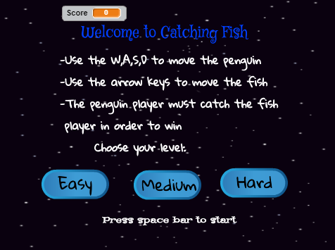
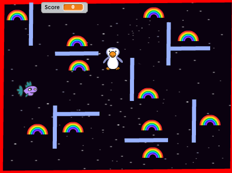
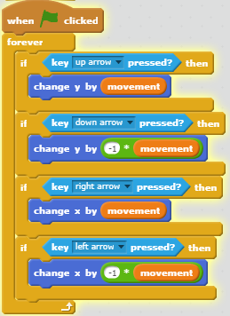
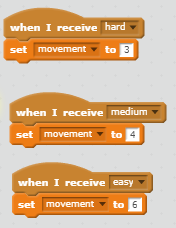
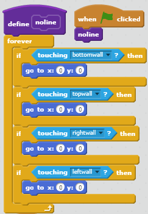
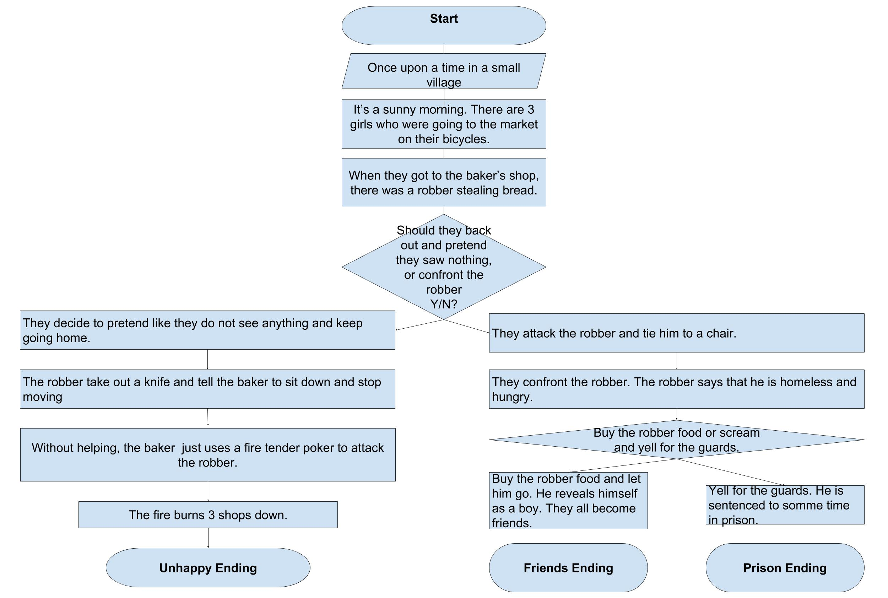

Portfolio
Click here for a robber storyScratch Game: Catching Fish
  Click here to PlayCatching fish is a two player game where the penguin player tries
to catch the fish player before the fish can eat all the rainbow food.
The food the fish eats are counted as one point each. The game has
three levels implemented through three buttons. If the penguin catches
the fish, then the fish dies and the player loses. If the fish collects
all the food, then the peguin dies of starvation and that player loses.
We chose to make 'Catching Fish' because I had seen a similar game, and wanted to make our own version of it. The fish and peguin sprites and the home page were very successful. However, the walls and line barriers were confusing to code. We ended up searching up how we could make two sprites collide in scratch. We found one succesful example. We then took the peice of code and modified it for our own use. If we had more time, we could have adde more sprites and adjusted the wall sprites to make it more complicated. Also, the website wouldn't let us save, so we would also fix those problems.
 On the left is an example of a peice of algorithm from the game. This particular peice controls the movement of the fish. The code starts when the green flag is clicked. The if statement tells us that if the arrow keys the fish moves in the direction of the arrow depending on the value of movement. The right tells us that when it gets the message that the easy medium or hard buttons are clicked, the fish moves at different speeds. Lastly, the forever loop tells us that it is forever checking if the arrows are pressed.
Here is our more block block:
Friendly Neighborhood Robber
Friendly Neighborhood Robber is about a small town where three kids handle a bakery robbery. Readers choose how the kids react.
During implementation, we coded the way the story would be displayed. Though we did run into some minor problems with the code itself, the suprisingly hardest part was thinking of a story that wouldn't be too long. Similarly, in the testing phase of the process, the most common problem was with the story itself. The coding portion was really cool to see, everytime we tested it.
Putting the story into multiple functions is an example of procedural abstraction. It saves the coder time and work by not having to code one big peice of code. By breaking it up, the story can have steps and allows the ability to easily code in the user input parts.
One of the other stories that stood out to me was "Benpigmen". I liked the cause and effect aspect. The story had a pretty good plot and it had a humorous undertone that I liked.
Here is the code. Press "Run" to read the story.